Glory of Rome art
classes 24
portraits 4
 dux
dux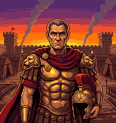
legatus praetorianus
praetorianus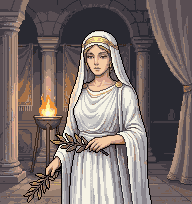
sibyllaheroes 4
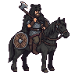
dux_hero legatus_heropraetorianus_hero
legatus_heropraetorianus_hero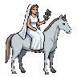
sibylla_herohero walks 16
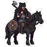
dux_walk_00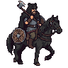
dux_walk_01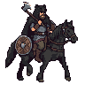
dux_walk_02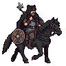
dux_walk_03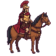
legatus_walk_00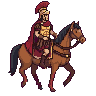
legatus_walk_01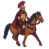
legatus_walk_02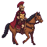
legatus_walk_03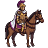
praetorianus_walk_00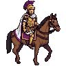
praetorianus_walk_01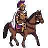
praetorianus_walk_02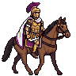
praetorianus_walk_03sibylla_walk_00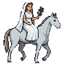
sibylla_walk_01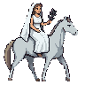
sibylla_walk_02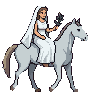
sibylla_walk_03combat 18
field 1
field_grass
castle walls 10
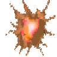
castle_spike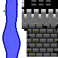
castle_wall_01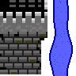
castle_wall_02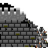
castle_wall_03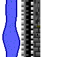
castle_wall_04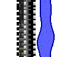
castle_wall_05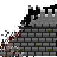
castle_wall_06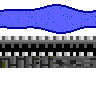
castle_wall_back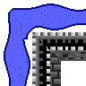
castle_wall_back_l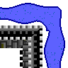
castle_wall_back_robstacles 3
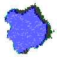
obstacle_01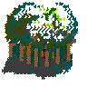
obstacle_02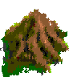
obstacle_03cursor 4
cursor_01cursor_02cursor_03cursor_04
sprites 4
boat 4
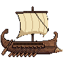
boat_00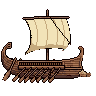
boat_01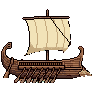
boat_02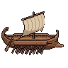
boat_03tiles 75
terrain 6
desert forest
forest grassgrass_variant
grassgrass_variant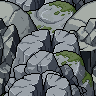
mountainwater places 11
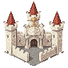
castle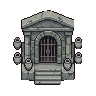
dwelling_dungeon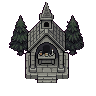
dwelling_forestdwelling_hills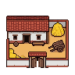
dwelling_plains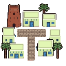
town_africa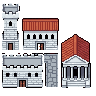
town_castle_l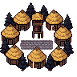
town_galliae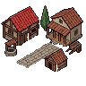
town_italia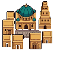
town_oriens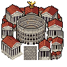
town_romeobjects 10
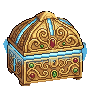
artifact_chest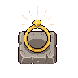
artifact_ring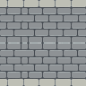
bridge_hbridge_vchestsignwandering_army_africawandering_army_galliaewandering_army_italiawandering_army_oriensdesert edges 12
desert_edge_01desert_edge_02desert_edge_03desert_edge_04desert_edge_05desert_edge_06desert_edge_07desert_edge_08desert_edge_09desert_edge_10desert_edge_11desert_edge_12
forest edges 12
forest_edge_01forest_edge_02forest_edge_03forest_edge_04forest_edge_05forest_edge_06 forest_edge_07
forest_edge_07 forest_edge_08forest_edge_09forest_edge_10forest_edge_11forest_edge_12
forest_edge_08forest_edge_09forest_edge_10forest_edge_11forest_edge_12 mountain edges 12
mountain_edge_01mountain_edge_02mountain_edge_03mountain_edge_04 mountain_edge_05
mountain_edge_05 mountain_edge_06mountain_edge_07
mountain_edge_06mountain_edge_07 mountain_edge_08mountain_edge_09mountain_edge_10mountain_edge_11mountain_edge_12
mountain_edge_08mountain_edge_09mountain_edge_10mountain_edge_11mountain_edge_12 water edges 12
water_edge_00water_edge_01water_edge_02water_edge_03water_edge_04water_edge_05water_edge_06water_edge_07water_edge_08water_edge_09water_edge_10water_edge_11
troops 104
antaei 4
antaei_00antaei_01antaei_02antaei_03
baleares 4
baleares_00baleares_01baleares_02baleares_03
coloni 4
coloni_00coloni_01coloni_02coloni_03
cyclopes 4
cyclopes_00cyclopes_01cyclopes_02cyclopes_03
dracones 4
dracones_00dracones_01dracones_02dracones_03
druidae 4
druidae_00druidae_01druidae_02druidae_03
empusae 4
empusae_00empusae_01empusae_02empusae_03
equites 4
equites_00equites_01equites_02equites_03
fauni 4
fauni_00fauni_01fauni_02fauni_03
furiae 4
furiae_00furiae_01furiae_02furiae_03
gigantes 4
gigantes_00gigantes_01gigantes_02gigantes_03
hastati 4
hastati_00hastati_01 hastati_02
hastati_02 hastati_03
hastati_03 lares 6
lares_00lares_01lares_02lares_03lares_04lares_05
larvae 4
larvae_00larvae_01larvae_02larvae_03
lemures 4
lemures_00lemures_01lemures_02lemures_03
ligures 4
ligures_00ligures_01ligures_02ligures_03
lupi 4
lupi_00lupi_01lupi_02 lupi_03
lupi_03 manes 4
manes_00manes_01manes_02manes_03
numidae 4
numidae_00numidae_01numidae_02numidae_03
praetoriani 4
praetoriani_00praetoriani_01praetoriani_02praetoriani_03
sarmatae 6
sarmatae_00sarmatae_01sarmatae_02sarmatae_03sarmatae_04sarmatae_05
silvani 4
silvani_00silvani_01silvani_02silvani_03
striges 4
striges_00striges_01striges_02striges_03
tirones 4
tirones_00tirones_01tirones_02tirones_03
velites 4
velites_00velites_01velites_02velites_03
ui 43
backdrops 6
backdrop_castlebackdrop_dungeonbackdrop_forestbackdrop_hillcavebackdrop_plainsbackdrop_town
endings 5
end_carpet end_grassend_heroend_lose_screenend_win_screen
end_grassend_heroend_lose_screenend_win_screen splash and picker 4
class_select_highlightclass_select_pickersplash_logosplash_title
chrome 1
chrome_overworld
hud 14
hud_bar_striphud_contract_silhouettehud_gold_pursehud_magic_00hud_magic_01hud_magic_02hud_magic_03hud_magic_silhouettehud_puzzle_gridhud_siege_00hud_siege_01hud_siege_02hud_siege_03hud_siege_silhouette
inventory 12
inventory_artifact_amuletinventory_artifact_anchorinventory_artifact_articlesinventory_artifact_bookinventory_artifact_crowninventory_artifact_ringinventory_artifact_shieldinventory_artifact_swordinventory_zone_africainventory_zone_galliaeinventory_zone_italiainventory_zone_oriens
puzzle 1
puzzle_cover
villains 136
alaric 8
alaric_00alaric_01alaric_02alaric_03alaric_04alaric_05alaric_06alaric_07
arminius 8
arminius_00arminius_01arminius_02arminius_03arminius_04arminius_05arminius_06arminius_07
attila 8
attila_00attila_01attila_02attila_03attila_04attila_05attila_06attila_07
boudica 8
boudica_00boudica_01boudica_02boudica_03boudica_04boudica_05boudica_06boudica_07
brennus 8
brennus_00brennus_01brennus_02brennus_03brennus_04brennus_05brennus_06brennus_07
catiline 8
catiline_00catiline_01catiline_02catiline_03catiline_04catiline_05catiline_06catiline_07
civilis 8
civilis_00civilis_01civilis_02civilis_03civilis_04civilis_05civilis_06civilis_07
gildo 8
gildo_00gildo_01gildo_02gildo_03gildo_04gildo_05gildo_06gildo_07
hannibal 8
hannibal_00hannibal_01hannibal_02hannibal_03hannibal_04hannibal_05hannibal_06hannibal_07
jugurtha 8
jugurtha_00jugurtha_01jugurtha_02jugurtha_03jugurtha_04jugurtha_05jugurtha_06jugurtha_07
mithridates 8
mithridates_00mithridates_01mithridates_02mithridates_03mithridates_04mithridates_05mithridates_06mithridates_07
pyrrhus 8
pyrrhus_00pyrrhus_01pyrrhus_02pyrrhus_03pyrrhus_04pyrrhus_05pyrrhus_06pyrrhus_07
shapur 8
shapur_00shapur_01shapur_02shapur_03shapur_04shapur_05shapur_06shapur_07
spartacus 8
spartacus_00spartacus_01spartacus_02spartacus_03spartacus_04spartacus_05spartacus_06spartacus_07
tacfarinas 8
tacfarinas_00tacfarinas_01tacfarinas_02tacfarinas_03tacfarinas_04tacfarinas_05tacfarinas_06tacfarinas_07
vercingetorix 8
vercingetorix_00vercingetorix_01vercingetorix_02vercingetorix_03vercingetorix_04vercingetorix_05vercingetorix_06vercingetorix_07
zenobia 8
zenobia_00zenobia_01zenobia_02zenobia_03zenobia_04zenobia_05zenobia_06zenobia_07